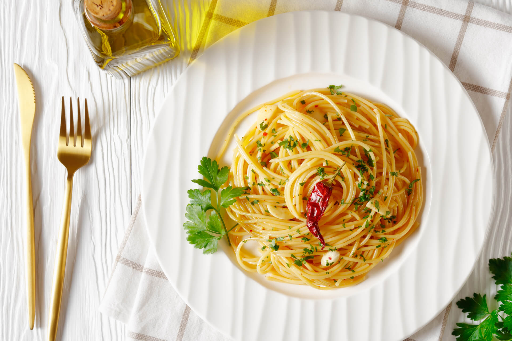

Spaghetti Aglio, Olio e Peperoncino

Description
Tiramisu is an Italian dessert made of ladyfinger pastries (savoiardi) dipped in coffee, layered with a whipped mixture of egg yolks, sugar, and mascarpone, and topped with cocoa powder. The recipe has been adapted into many varieties of cakes and other desserts.
Ingredients
- 200 g (7 oz) spaghetti
- 2 garlic cloves
- Chili pepper (fresh or dried, to taste)
- 4 tablespoons extra virgin olive oil
- Coarse salt (for the pasta water)
- (Optional) Fresh chopped parsley
Steps
- Bring a pot of salted water to a boil and cook the spaghetti until al dente.
- Meanwhile, heat the olive oil in a pan with sliced garlic and chili pepper.
- Once the garlic is golden, turn off the heat to prevent it from burning.
- Drain the pasta (save a bit of cooking water) and add it to the pan.
- Toss the spaghetti in the oil for a minute, adding a spoonful of cooking water if needed. Serve immediately, with chopped parsley if desired!
Back to all recipes